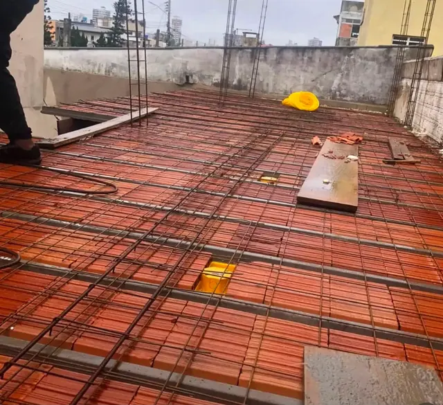
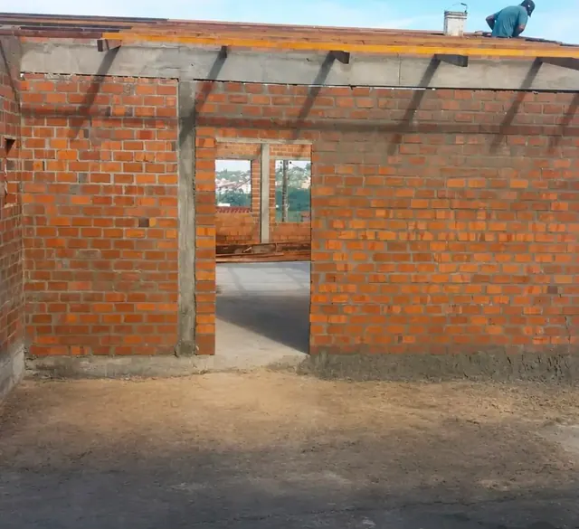
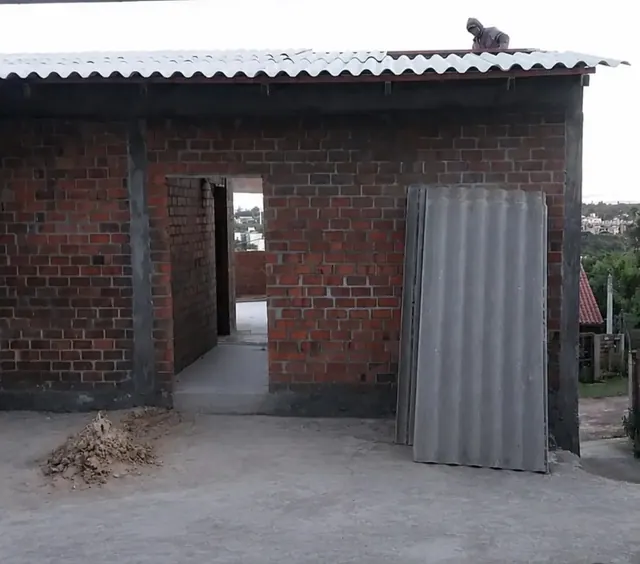
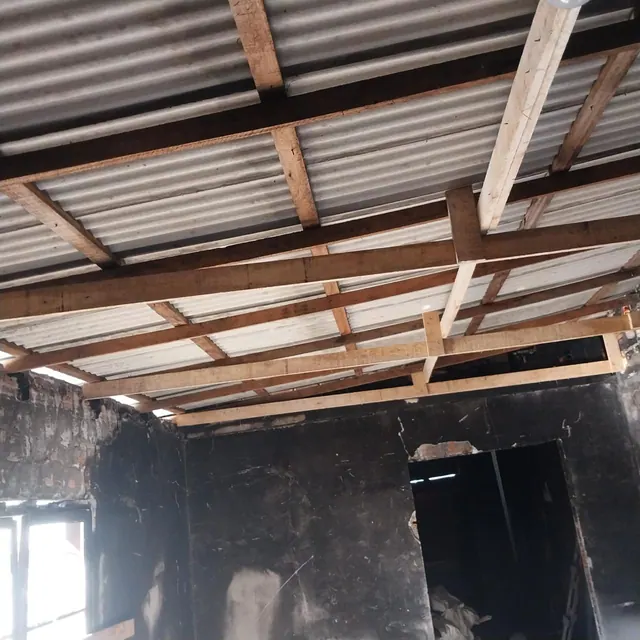
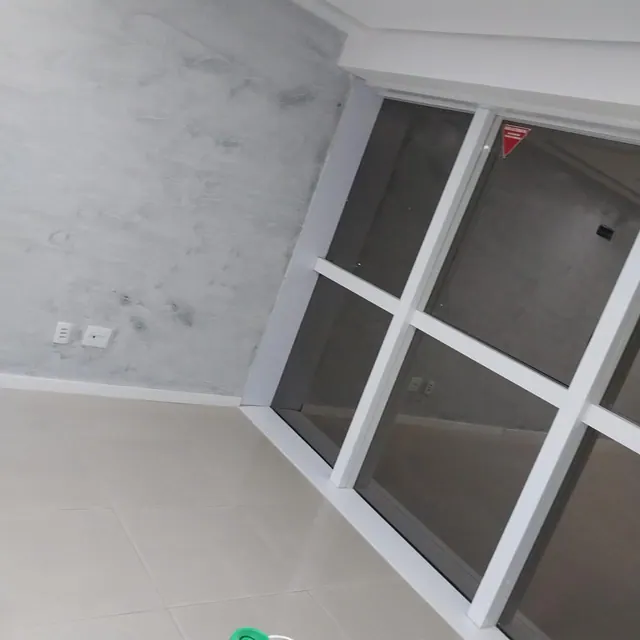
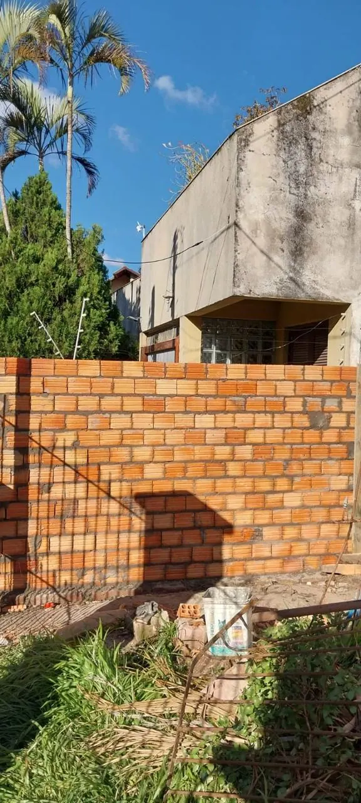

Fundação e estrutura
Preparação da base, fundações, lajes e execução das etapas definidas para o início da construção.
Construção e reformas no Rio Grande do Sul
Uma equipe para executar diferentes etapas da sua obra com comunicação direta, cuidado no acabamento e compromisso com o que foi combinado.

Soluções para a obra
Da preparação da base até a limpeza final, cada serviço é apresentado de forma clara para facilitar o orçamento e o planejamento.
Preparação da base, fundações, lajes e execução das etapas definidas para o início da construção.
Levantamento de paredes, ampliações, divisões, correções e aplicação de reboco em áreas internas e externas.
Montagem, reforma e manutenção de estruturas e coberturas para proteger e completar a edificação.
Execução de gesso e acabamentos para entregar ambientes mais alinhados, funcionais e bem finalizados.
Assentamento de pisos e porcelanatos com atenção ao nivelamento, recortes e acabamento visual.
Serviços de solda e execução de apoios metálicos conforme a necessidade de cada etapa da obra.
Remoção da sujeira pesada deixada pela execução para preparar o espaço para vistoria, organização e uso.
Registros reais
Imagens fornecidas pela própria equipe, mostrando estrutura, alvenaria, cobertura e acabamento.





Sobre a Renan Reformas
A Renan Reformas atua em obras e reformas gerais, reunindo serviços que vão da fundação à alvenaria, além de telhados, gesso, porcelanato, solda e limpeza pesada pós-obra.
O objetivo é facilitar a execução para quem precisa coordenar diferentes etapas, mantendo contato próximo e clareza sobre o andamento do trabalho.
Área de atendimento
A disponibilidade para cada cidade depende do tipo e do porte do serviço. Envie os detalhes para a equipe avaliar o deslocamento e a melhor forma de atendimento.
Vamos conversar sobre a obra?
Informe o serviço e a cidade. O formulário prepara a mensagem e abre a conversa diretamente com a Renan Reformas.
carolinnasllv5@gmail.com